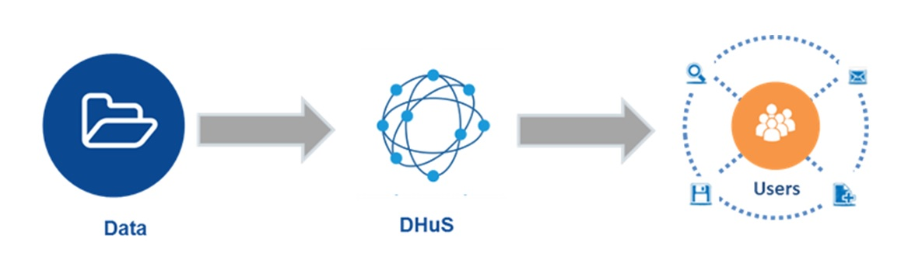
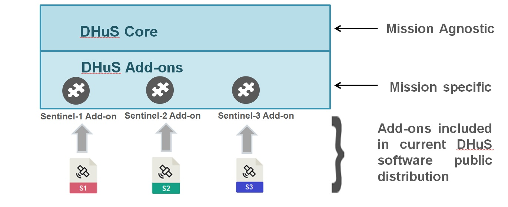
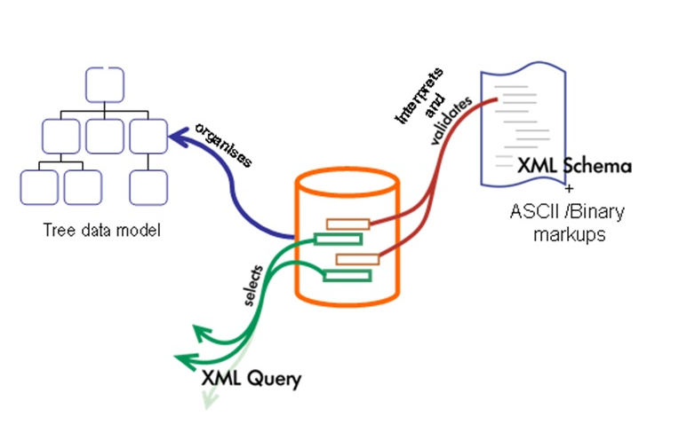
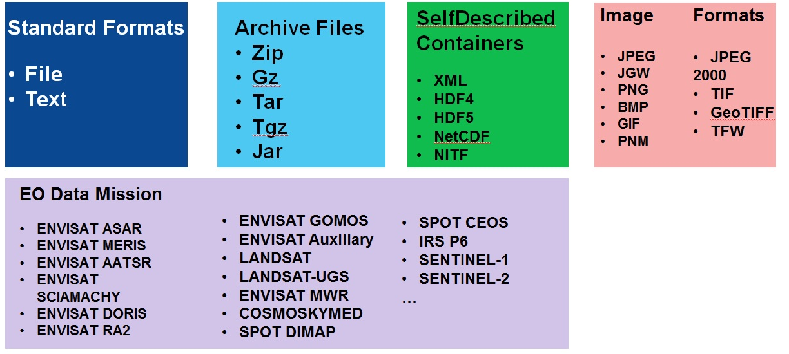
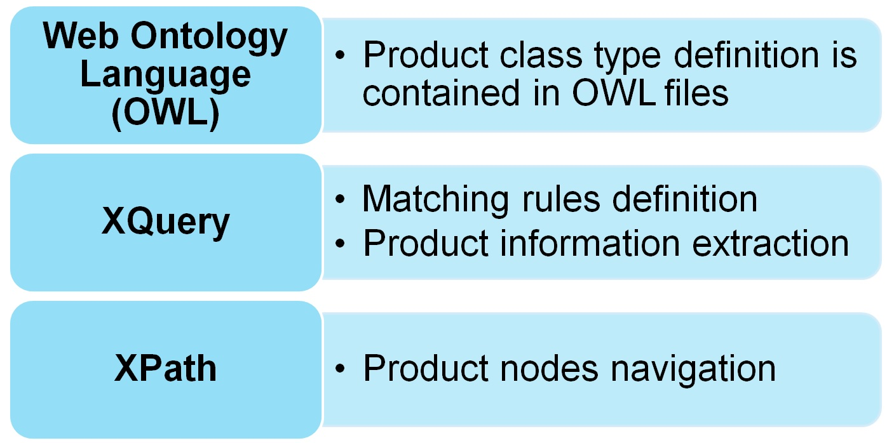
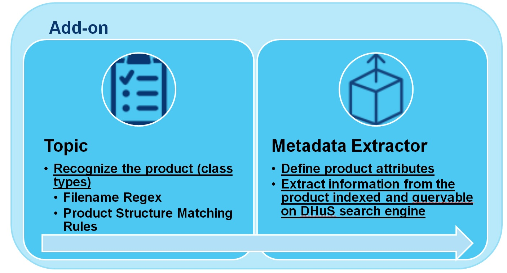
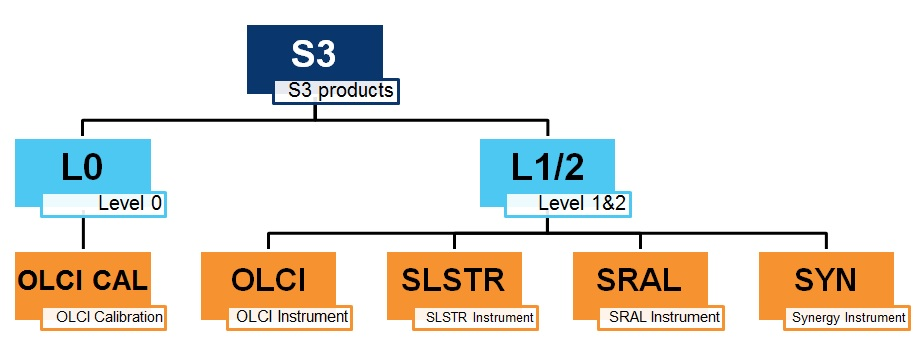
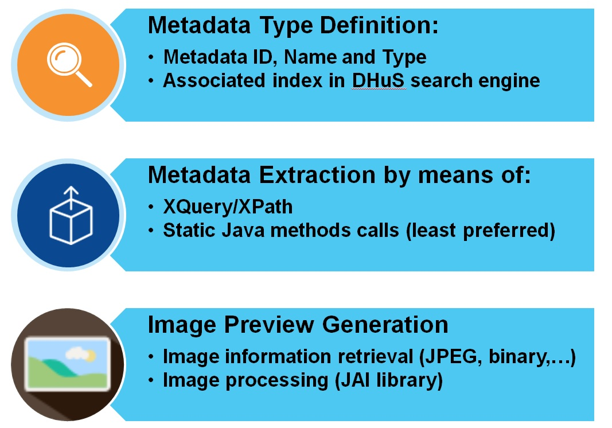
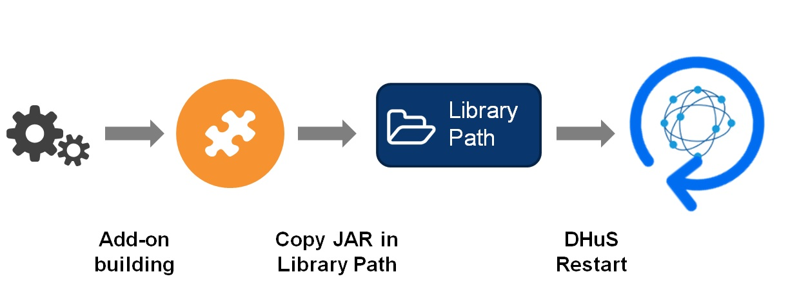
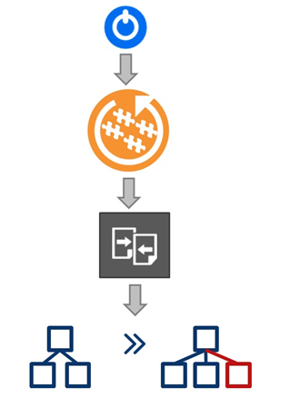

DHuS Add-on Context
The Data Hub Software is designed to provide users with a distributable service of mirror archives and dissemination means for products.
DHuS can ingest and disseminate a specific product if a specific Add-on for it exists. Add-ons are pluggable modules (JAR) containing information necessary to classify mission products DHuS can be easily extended to manage new data by means of new Add-ons development.
No software changes are needed to DHuS Core to manage new Add-ons or to modify existing ones.

Technologies and design
DHuS Add-on programming is based on:

The Data Request Broker – DRB API® , developed by GAEL, is a Java open source API for manipulating data disregarding their content-types and formats. DRB is used within DHuS to access and extract data information.
DRB API has an XQuery engine allowing access to:
• XML documents;
•binary files described through XML Schema Definition;
DRB API can managed a conspicuous set of data type, such as:
Languages and Standards
 Implementation and Integration
Contains product class hierarchy defined by means of Web Ontology Language (OWL)
Topic coding rules
1.Class type identifier;
2.Class type comment (optional);
3.Product class subclass of Drb Item;
4.Definition of matching rules (at least one);
5.XML schema definition (optional);
OWL is used in DHuS Add-on to organize the data type configuration under classes and subclasses with inheritable properties. In the DHuS context, OWL is used for product class characterization by means of:
•Filenames Regex
•Product structure matching rules
Metadata Extractor
Metadata Extractor Coding Rules
1.Metadata extractor sections should be bound to a topic class type;
2.The definition of following metadata is MANDATORY:
•Filename
•Format
3. In case of image preview generation, the add-on should contain drb-image library and JAI library as maven dependencies;
XQuery and XPath
DHuS Add-ons use DRB XQuery Engine to query and transform set of products both structured and unstructured, usually in XML form. XQuery uses XPath expression syntax to address specific parts of product.
JAVA
In the Add-on context, it is possible to use Java for:
•Calling static methods defined in Java classes included in the add-on (for metadata extraction)
•Including Java code directly inside ontology files (for image processing)
Recommendation
Product class types definition without ambiguity
• Product class types definition should avoid code repetition
•xsd schema import for binary format browsing
•Index definition to improve data search using search engine (Solr)
•XQuery language preferred for metadata extraction
Add-on Loading
Add-ons can be integrated in the DHuS easily copying the JAR modules in the DHuS library path and restarting the system
Schema check and update
1.At start-up the DHuS
2.Loads the add-ons included in its library path
3.Checks the metadata types defined in the addons
4.Updates the schema of the search engine, if new indexes are found
These activities don't impact on DHuS Core.